Expertos en Identity & Access Management (IAM)
Firma boutique de consultoría especializada en Arquitectura de Zero Trust, Microsoft Entra ID y Gobernanza de Identidades (IGA). Mitigamos riesgos sin interrumpir tu operación diaria.
Las configuraciones heredadas, la falta de gobierno sobre cuentas de servicio y las brechas en MFA dentro de Microsoft Entra ID son la principal puerta de entrada para ataques de ransomware y movimiento lateral. Si tu directorio activo migró a la nube orgánicamente, es probable que existan vulnerabilidades silenciosas.
Sesión ejecutiva (Kickoff) para entender la arquitectura actual, los requerimientos de cumplimiento y los dolores operativos de tu equipo de TI.
Análisis exhaustivo de tu postura en Entra ID utilizando accesos controlados. Sin cambios en producción, sin interrupciones para tus usuarios.
Entrega de hallazgos categorizados por nivel de criticidad (Riesgo, Impacto y Esfuerzo) junto con un plan de remediación técnico directamente accionable.
Auditoría profunda de su postura de seguridad, políticas de Acceso Condicional, MFA gaps y remediación de cuentas huérfanas en Microsoft Entra ID.
Alineación con marcos regulatorios, certificación de accesos, integración con SailPoint y control estricto de privilegios (PAM).
Transformación de la complejidad técnica del control de accesos en una ventaja de negocio. El acceso correcto, a la persona correcta, en el momento preciso.
+15 Años de Experiencia Técnica.
Arquitectura liderada por especialistas certificados a nivel Expert en plataformas líderes del mercado y metodologías CIAM.